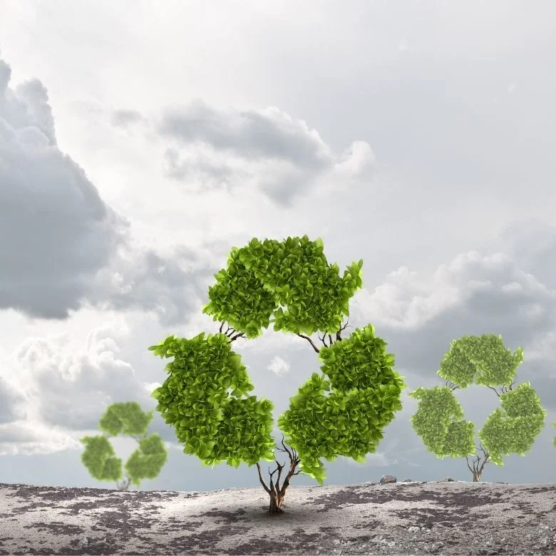

Can the earth be saved?
The answer is yes by recycling
What is recycling
Recycling is the process of turning waste materials into new products that would otherwise be thrown away. Recycling waste benefits the environment by lowering the production of harmful materials and energy use.
Importance of recycling
1. Guards wildlife and ecosystems
Recycling helps the environment be less disturbed. Animal harm is avoided when we clear fewer trees and forests. By reducing disruption and damage to the natural world, we help preserve ecosystems and wildlife.
2. Protects natural resources
Recycling aids in the preservation of some of the natural resources that the world is running low on.
Paper recycling helps preserve forests and trees. Plastic can take hundreds of years to decompose and requires a lot of solid waste when it is recycled. Additionally, the majority of plastic is made from hydrocarbons found in fossil fuels.
Metal recycling decreases the need to mine new metal ores, while glass recycling decreases our need for certain raw materials like sand
3. Saves Energy
Utilizing recycled materials instead of new, raw materials saves energy during production. Making products from recycled materials instead of virgin materials requires a lot less energy. One glass bottle recycled, for instance, can save enough energy to run a 100-watt light bulb for four hours.
4. Lessens the Demand for New Material Harvesting
Recycling lessens the need for raw material harvesting. People who live close to forests or near river systems are also displaced due to our growing demand for these raw materials. Recycling lessens the likelihood of causing harm to someone else's property or neighbourhood.
ways of recycling

- Replace plastic bags with reusable ones. An average of ten plastic bags are needed to transport the entire load of groceries home after a weekly trip to the grocery store. For a single household, that equates to about 520 plastic bags annually. Use washable, reusable cloth bags that you can use all year long in place of recycling plastic bags.
- Recycle scrap paper for arts and crafts. Small pieces of pretty fabric and paper can have a significant impact. They can be made into decorative tape strips to create lovely trims that are ready for use.
- Put glass jars and containers to new uses. Why not repurpose them for other household items that require a new container since you are paying more for these glass containers filled with food? On Pinterest, you can find a variety of green living ideas that will demonstrate wonderful ways to recycle ordinary glass jars into lovely home goods, ranging from food containers to decorative light hangers.
- Make use of paper towels and napkins. Utilizing cloth towels and napkins in the kitchen and restrooms will help you use less paper and provide a reusable item, potentially saving you a few hundred dollars annually.
Recycling organizations
American National Standards Institute (ANSI)
The Environmental Protection Agency (EPA)
Renewable Fuels Association (RFA)
Renewable Fuels Association (RFA)